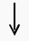

[ "The brown rabbit" # Doc 1 "I write code" # Doc 2 ... "Data is good" # Doc n ]

1. Sub-word Splitting:
Doc 1: ["The", "Ġbrown", "Ġrabbit"] # The "Ġ" represents the white-space Doc 2: ["I", "Ġwrite", "Ġcode" ] Doc n: ["Data", "Ġis", "Ġgood" ]
2. Converts to Token IDs:
Doc 1: [512, 1024, 850] # 512 represents "The"
Doc 2: [ 10, 440, 990] # 440 represents "Ġwrite"
Doc n: [ 88, 310, 500] # 500 represents "Ġgood"
3. Appends an end token (<|end_of_doc|>) between the documents, and then dumps those tokens into a flat 1D list (2 represents the <|end_of_doc|> token.):
[512, 1024, 850, 2, 10, 440, 990, 2, 88, 310, 500, 2]
Context Window: Note that the DataLoader will slice the flat 1D list so that it fits into the model's fixed context window length. For example context window = 8, the 1D list would look like:
[512, 1024, 850, 2, 10, 440, 990, 2]
# This passes exactly 8 tokens, so only Doc 1 and Doc 2
# are passed into the Token Embeddings layer.
[
[
[ 0.33, -0.91, ..., 0.22], # Vector for "The" (ID 512)
[ 0.77, 0.11, ..., 0.54], # Vector for "Ġbrown" (ID 1024)
[-0.44, -0.33, ..., 0.61], # Vector for "Ġrabbit" (ID 850)
[ 0.99, 0.88, ..., 0.11], # Vector for <|end_of_doc|> (ID 2)
[-0.15, 0.22, ..., -0.87], # Vector for "I" (ID 10)
[ 0.65, 0.43, ..., 0.34], # Vector for "Ġwrite" (ID 440)
[-0.23, -0.76, ..., -0.19], # Vector for "Ġcode" (ID 990)
[ 0.99, 0.88, ..., 0.11] # Vector for <|end_of_doc|> (ID 2)
]
]